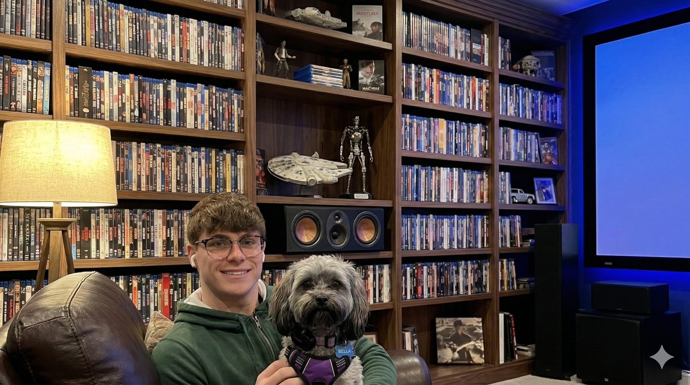
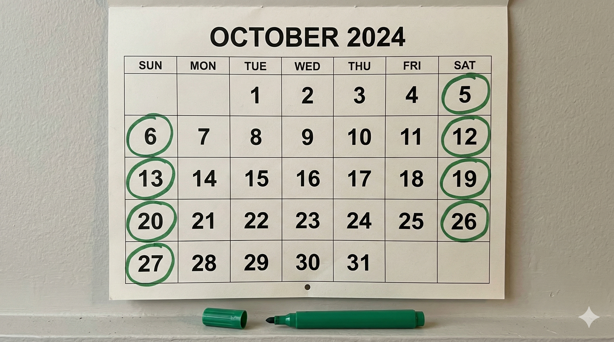
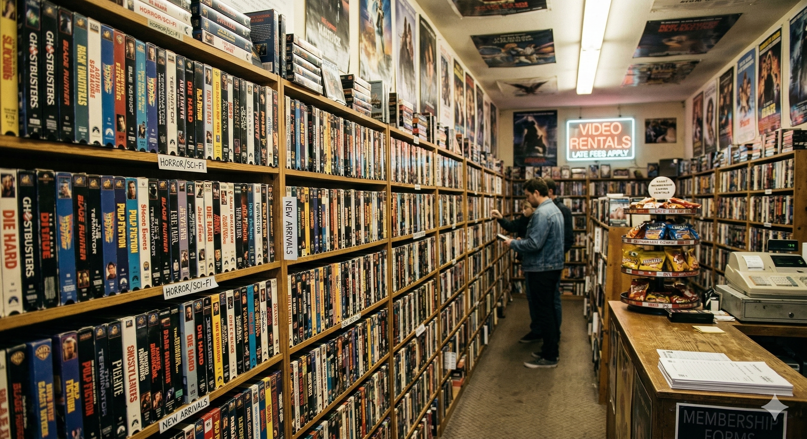

What is Physical Media Collection?
Physical media collection is the dedicated hobby of acquiring, archiving, and enjoying physical formats of entertainment. In an era dominated by invisible digital streams, this hobby focuses on data stored in phyisical means like discs and cassettes with examples being:
- Film & Television: Blu-rays, 4K UHDs, and boutique label releases (like Criterion or Arrow Video).
- Video Games: Cartridges and discs across various console generations.
- Music: Vinyl records, CDs, and cassettes.
AI Prompt: "A stack of Blu-ray movie cases and other physical media on a dark wooden shelf, photorealistic."
The Collector (About Me)
As a 25-year old student veteran and computer science senior at UNC Charlotte, my days are often heavily immersed in screens, code, and studying the intricacies of information technology. Navigating the digital world is my profession and my major, which makes stepping away from it all the more important.
When I'm not diving into strategy games or spending time with my dog, Bella, I focus my free time on something beautifully disconnected from the cloud. Collecting physical media allows me to anchor my love for art and entertainment in something tangible that I can actually hold.

AI Prompt: "Using these photos generate a photo realistic image of a man and his dog sitting next to a massive home theater bookshelf (Photos were of myself and my dog bella)"
When to Hunt for Physical Media
Building a solid collection requires timing. While you can buy movies and games online 24/7, the true thrill of the hunt comes from knowing exactly when to look for the best additions to the archive.
| Season / Time | Best For |
|---|---|
| November (Black Friday) | Deep discounts on boutique labels (Criterion 50% off sales). |
| Saturday Mornings | Flea markets, garage sales, and thrift store weekend restocks. |

AI Prompt: "A photo realistic calendar with the weekend circled in green marker"
Where to Find the Best Media
Part of the hobby is exploring different venues. From local brick-and-mortar shops around Charlotte to vast online networks, expanding the collection takes you to many places.

AI Prompt: "a photorealistic vintage movie store packed shelves highly detailed."
How to Curate and Store
Collecting isn't just about hoarding; it's about curation, preservation, and display. Proper organization ensures that media outlasts its digital counterparts.
- Cataloging: Use apps like CLZ Movies or Blu-ray.com to scan barcodes and track what you own.
- Shelving: Organize alphabetically, by genre, or by boutique label spines (the age-old debate).
- Maintenance: Keep discs out of direct sunlight and handle them strictly by the edges.
AI Prompt: "Perfectly organized shelves of Blu-ray movies and video games, neatly aligned, photorealstic."
Why Keep Physical Discs?
In the age of streaming, why bother with physical boxes? The answer lies in digital rights, video quality, and the simple joy of ownership.
"You don't own what you stream. Titles disappear from platforms every day due to licensing issues. Physical media is the only guarantee that your favorite film will be there when you want to watch it."
Furthermore, 4K UHD discs offer significantly higher bitrates than 4K streaming, meaning uncompressed, flawless audio and visual experiences without buffering.
AI Prompt: "A realistic contrast between a glowing holographic cloud and a solid, tangible media disc held in a hand."
AI Usage
Google's Gemini Generative AI was utilized to assist in the conceptualization and coding of this single-page application, ensuring structural compliance and CRAP design principles.
-
Code Generation: AI was prompted to generate an
Script utilizing JavaScript to toggle the
displayproperty of semantic<section>tags.
Prompt: "I am building a vanilla JS single page app with this structure:<section id="home" class="active">...</section>
<section id="about">...</section>
<section id="contact">...</section>
Write a JavaScript function called showSection(sectionId) that I can trigger from my navigation buttons. It should find all sections in the main tag, strip the 'active' class from them, and apply it only to the one matching the passed ID. Comment the steps clearly (1, 2, 3)." -
Font and Color Scheme: AI was used to help generate
a list of fonts and color schemes to choose for the website.
Prompt: Generate a variety of fonts that give a "nerdy" vibe that I can choose from, also generate a few different color schemes for a website focusing on a dark forest green being the main color. - Image Generation: AI was used to generate all thematic imagery to maintain a consistent visual style throughout the assignment. Beneath each image is the respective prompt that was utilized to generate the image.
-
Assignment Requirement Validation: AI was used to
validate that all requirements given on the canvas webpage were
achieved.
Prompt: Using the following PDF Document validate that all rubric requirements were met on the following code. (for the sake of simplicity I won't be pasting the entire code block) if not make a detailed list of what is missing and how that can be fixed.